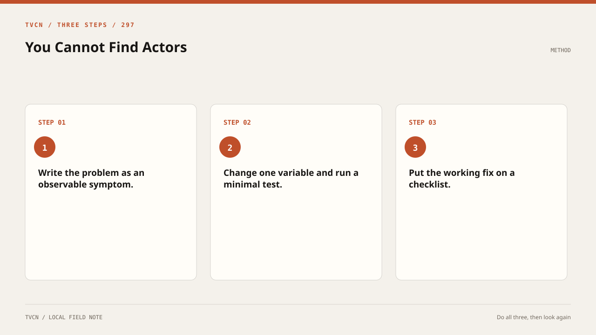

Do you need “real” or “trained”?
- Real: job, age, physicality. Casting an actual worker often reads truer than casting an actor.
- Trained: sustained emotion and dialogue. Untrained performers do better with actions and short lines; do not hand them a long monologue.
- Controllable: time, consent, availability. A friend is easier to talk to, but familiarity does not replace a release form.
A two-minute audition
Ask for three actions: enter, look for something, hear bad news. Give verbs, not adjectives. Watch whether the response is natural and repeatable. Someone who cannot repeat it will consume the whole day on set.
When not to cast a non-actor
Complex crying, long speeches, precise blocking or intimacy carry high risk with an untrained performer. Rewrite the scene or cast someone trained; do not force it on set.
Three-step flow

On set
Shoot hands, backs, objects, and sound. Use voice-over or titles; a character can exist without a face.
Do this
If you cannot cast an actor, shoot hands, backs, objects, and sound. Give a real person a real task instead of asking for emotion.
- Break the character into four shootable parts: hands, back, profile, shadow.
- Find someone willing to do a real task: cook, repair, walk. Give them a concrete job.
- Record breath, footsteps, and room tone while they work; let sound fill in the person.
Avoid
Do not ask a non-actor to “play sad.” Ask them to find keys or wait for water to boil; emotion arrives on its own.
Image note. Covers, diagrams and step images on this page are editorial illustrations or structure diagrams, not photographs of a test performed here; they are not evidence of measured gear performance. Where an image is AI-assisted, the caption says so. Read the test conditions in the text before treating an image as proof.